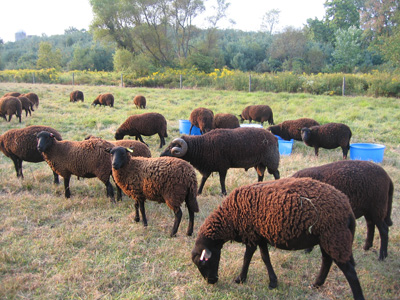

Our Animals
Rockbridge Farm is home to Black Welsh Mountain sheep, Romney sheep, and Boer Goats. Our animals are raised humanely, free of hormones, and full of natural goodness.
Black Welsh Mountain Sheep
Our Black Welsh Mountain flock is one of only about fifty registered flocks in the country, and we are fortunate to have recently secured a new bloodline directly from the UK.
Black Welsh Mountain Sheep are a small dual-purpose breed that provides excellent mild mutton and a completely black, dense, and durable fleece. They are small and easy to handle, and are ideal for farms where their hardiness, good mothering, and feed efficiency are significant assets.
Rams have attractive horns that curl around their ears, while ewes are polled. The breed is listed as threatened by the Livestock Conservancy, making conservation of these beautiful animals all the more important.
Three rams and 13 ewes were first imported to the United States in 1973, beginning the North American population. There are now approximately 1,600 in North America in flocks across the United States and Canada.
Romney Sheep
The Romney is a long-wool breed well known for its heavy and thick fleece. Traced back to Kent, England, the breed has adapted to varied conditions, remaining healthy and productive across different climates.
The Romney is often described as a dual-purpose breed, producing both meat and wool. The muscular lambs provide good meat, and the mature sheep produce a fleece that is easy to spin — making it a favorite among hand spinners and fiber artists.
Boer Goats
Rockbridge Farm is also home to Boer Goats. The Boer is a breed developed in South Africa for meat production, known for its rapid growth rate, excellent carcass quality, and docile temperament.
Boer Goats are hardy, adaptable animals that thrive in a variety of climates and conditions. They are excellent foragers and do well on pasture, making them a natural fit for the rolling hills of York County.